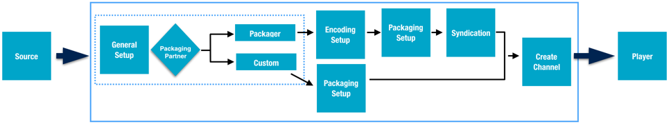
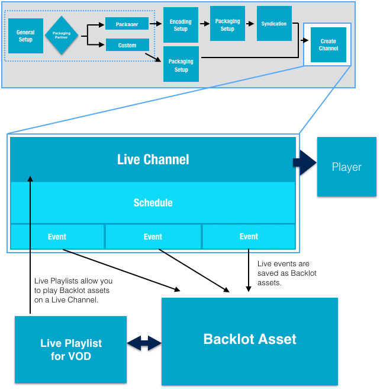

From a single self-service interface, create and update channels, schedules, events,
playlists, and monitor channel output.
Content Delivery Workflow
Basic setup for delivering live content only requires having a single channel.

Use the Live Channel capabilities to manage and stream Live content.
24x7 or Adhoc Channels
Channels are the highest level logical container for content.
| Considerations |
What You Can Do |
|
|
- Add channels.
- View all the channels you have created.
- View existing slates and upload new slates.
- View notifications.
- Start and stop channels.
- Live syndication of social media.
|
High Availability (HA) Channels
| Considerations |
What You Can Do |
- You must have at least two channels, either ad-hoc or 24x7, to create an HA
channel.
- Associated subchannels are controlled by the HA channel.
|
- Schedule and manage events on an HA channel.
- Hot swap HA subchannels.
|
Clipping
| Considerations |
What You Can Do |
- You must have a profile that is enabled for clipping before you can see and
enable clipping for a channel.
- The DVR setting for your channel also defines the size of the clipping buffer,
for example a 30 DVR window gives you a 30 minute clipping buffer.
|
- Capture segement of live streaming content and save them to Backlot for
rebroadcasting.
- Clip from the clipping buffer which represents the last n minutes of
the channels live stream.
|
Schedules and Events
Schedules—provide a time frame to which you add events to capture live streaming
content.
| Considerations |
What You Can Do |
- Schedules must have a default channel.
- The same schedule can be used on multiple channels.
- You must create a schedule before you can create events.
- Live syndication of social media does not require a schedule or event.
- Maximum event lenght:
- Azure = 24 hours
- Elemental = 8 hours
|
- Add schedules.
- View schedules.
- Delete schedules.
- Change schedules.
|
Events—specify the time a channels live stream is captured for rebroadcasting and
archchiving in Backlot.
| Considerations |
What You Can Do |
- You must have a channel before you can schedule an event.
- Maximum length for an event is 8 hours.
- The same event can be on multiple schedules.
|
- Add events.
- Remove events.
- View event status.
- View event details.
- Start events.
- Stop events.
|
Tip:
Once you have added channels you can create schedules and events to record segments of
what is streaming on the channel. Those events can be stored as Backlot assets.

Playlists allow you to stream Backlot assets on a Live Channel.
Playlists
Create playlists of prerecorded videos stored in Ooyala Backlot. Stream the playlist
content on a Live channel.
Important: The Playlist feature must be enabled before
you can use it. Contact Ooyala to enable playlists in Ooyala Live.
| Considerations |
What You Can Do |
- Your encoder profile must be enabled for playlists.
- Video used in your Live playlist must be stored in Backlot.
- To remove a Playlist you must remove the channel it is associated with.
- A channel can have only one playlist associated to it.
|
- Create playlists.
- Edit playlists.
- Remove playlists.
- Manage and arrange playlists.
|